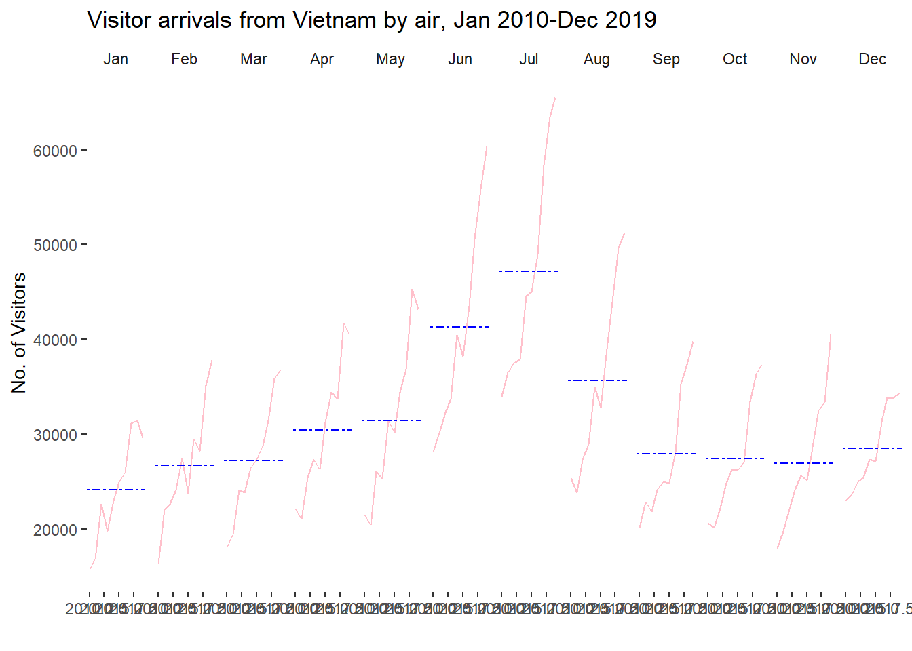
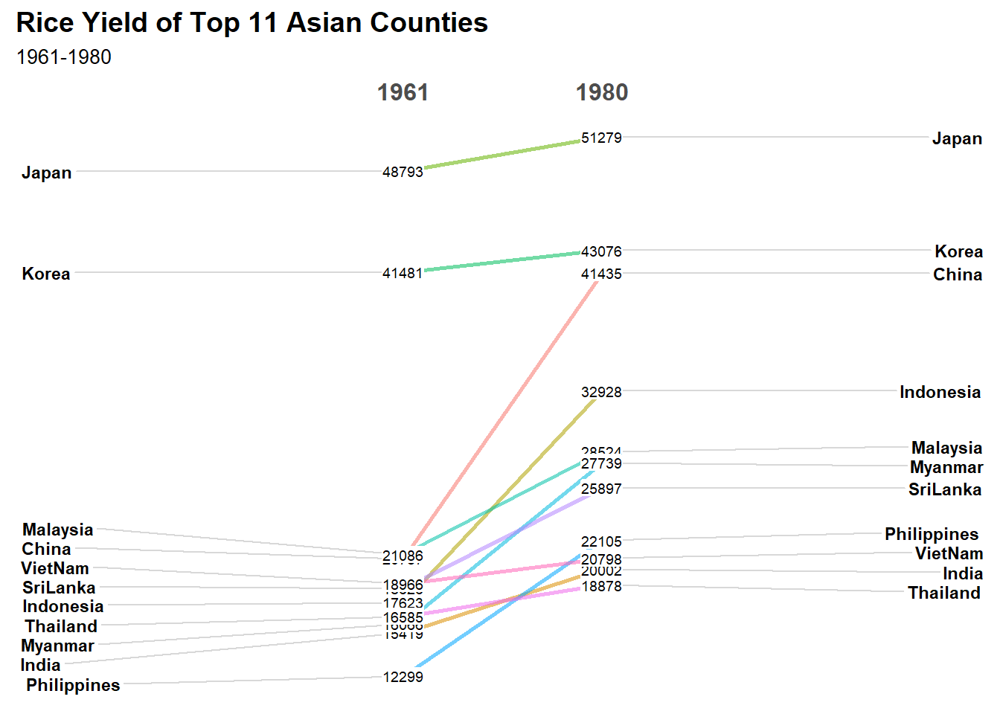
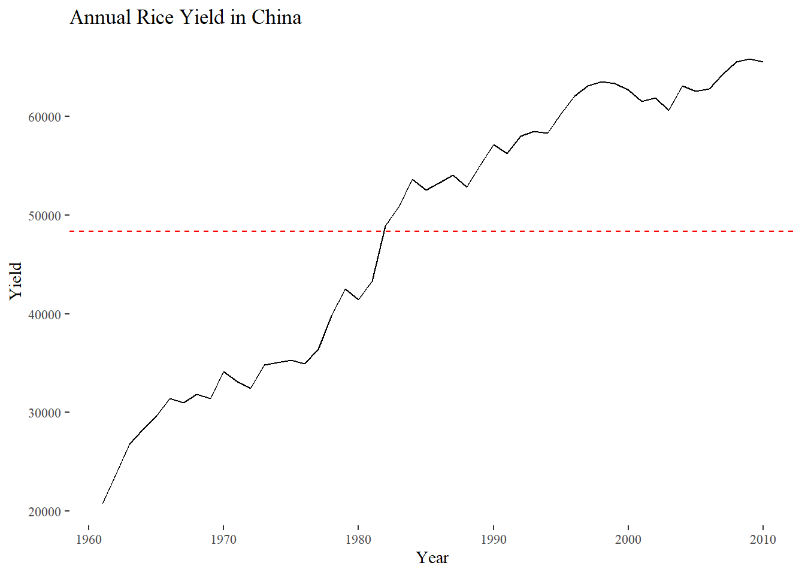
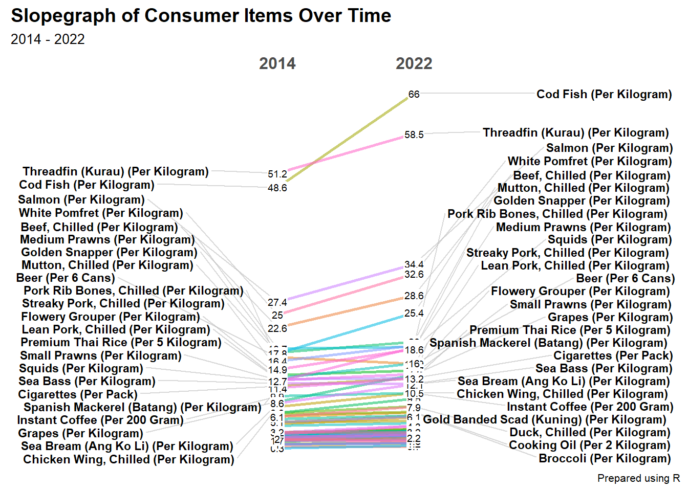

Code
pacman::p_load(scales, viridis, lubridate, ggthemes,
gridExtra, readxl, knitr, data.table,
tidyverse, CGPfunctions)With the assistance of ChatGPT
In this hands-on exercise, we will use R packages to create several visualizations:
pacman::p_load(scales, viridis, lubridate, ggthemes,
gridExtra, readxl, knitr, data.table,
tidyverse, CGPfunctions)The following code imports the eventlog.csv file into our R environment.
attacks <- read_csv("data/eventlog.csv")We will use kable() to review the structure of the imported data frame.
kable(head(attacks))| timestamp | source_country | tz |
|---|---|---|
| 2015-03-12 15:59:16 | CN | Asia/Shanghai |
| 2015-03-12 16:00:48 | FR | Europe/Paris |
| 2015-03-12 16:02:26 | CN | Asia/Shanghai |
| 2015-03-12 16:02:38 | US | America/Chicago |
| 2015-03-12 16:03:22 | CN | Asia/Shanghai |
| 2015-03-12 16:03:45 | CN | Asia/Shanghai |
The dataset includes three columns: timestamp, source_country, and tz.
timestamp: Contains date-time values in POSIXct format.
source_country: Represents the attack source using ISO 3166-1 alpha-2 country codes.
tz: Stores the time zone of the source IP address.
Before creating the calendar heatmap, we will write a function to derive two new fields:
wkday (weekday) and
hour
from the timestamp.
Step 1: Deriving weekday and hour of day fields
make_hr_wkday <- function(ts, sc, tz) {
real_times <- ymd_hms(ts,
tz = tz[1],
quiet = TRUE)
dt <- data.table(source_country = sc,
wkday = weekdays(real_times),
hour = hour(real_times))
return(dt)
}weekdays() is a base R function.
Step 2: Deriving the attacks tibble data frame
wkday_levels <- c('Saturday', 'Friday',
'Thursday', 'Wednesday',
'Tuesday', 'Monday',
'Sunday')
attacks <- attacks %>%
group_by(tz) %>%
do(make_hr_wkday(.$timestamp,
.$source_country,
.$tz)) %>%
ungroup() %>%
mutate(wkday = factor(
wkday, levels = wkday_levels),
hour = factor(
hour, levels = 0:23))Table below shows the tidy tibble table after processing.
kable(head(attacks))| tz | source_country | wkday | hour |
|---|---|---|---|
| Africa/Cairo | BG | Saturday | 20 |
| Africa/Cairo | TW | Sunday | 6 |
| Africa/Cairo | TW | Sunday | 8 |
| Africa/Cairo | CN | Sunday | 11 |
| Africa/Cairo | US | Sunday | 15 |
| Africa/Cairo | CA | Monday | 11 |
grouped <- attacks %>%
count(wkday, hour) %>%
ungroup() %>%
na.omit()
ggplot(grouped,
aes(hour,
wkday,
fill = n)) +
geom_tile(color = "white",
size = 0.1) +
theme_tufte(base_family = "Helvetica") +
coord_equal() +
scale_fill_gradient(name = "# of attacks",
low = "sky blue",
high = "dark blue") +
labs(x = NULL,
y = NULL,
title = "Attacks by weekday and time of day") +
theme(axis.ticks = element_blank(),
plot.title = element_text(hjust = 0.5),
legend.title = element_text(size = 8),
legend.text = element_text(size = 6) )
grouped) is created by aggregating attack data based on the wkday and hour fields.group_by() and count() functions.na.omit() is used to remove missing values.geom_tile() plots tiles (grids) at each (x, y) position, with color and size specifying the border color and line thickness.theme_tufte() from the ggthemes package is used to eliminate unnecessary chart elements.coord_equal() ensures the plot maintains a 1:1 aspect ratio.scale_fill_gradient() applies a two-color gradient (low to high).Tasks assigned: Building multiple heat maps for the top four countries with the highest number of attacks
Step 1: Deriving attack by country object
To determine the top four countries with the highest number of attacks, the data needs to be processed by
attacks_by_country <- count(
attacks, source_country) %>%
mutate(percent = percent(n/sum(n))) %>%
arrange(desc(n))Step 2: Preparing the tidy data frame Next, we will extract the attack records of the top 4 countries from attacks data frame and save the data in a new tibble data frame (i.e. top4_attacks).
top4 <- attacks_by_country$source_country[1:4]
top4_attacks <- attacks %>%
filter(source_country %in% top4) %>%
count(source_country, wkday, hour) %>%
ungroup() %>%
mutate(source_country = factor(
source_country, levels = top4)) %>%
na.omit()Step 3: Plotting the Multiple Calender Heat map by using ggplot2 package.
ggplot(top4_attacks,
aes(hour,
wkday,
fill = n)) +
geom_tile(color = "white",
size = 0.1) +
theme_tufte(base_family = "Helvetica") +
coord_equal() +
scale_fill_gradient(name = "# of attacks",
low = "sky blue",
high = "dark blue") +
facet_wrap(~source_country, ncol = 2) +
labs(x = NULL, y = NULL,
title = "Attacks on top 4 countries by weekday and time of day") +
theme(axis.ticks = element_blank(),
axis.text.x = element_text(size = 7),
plot.title = element_text(hjust = 0.5),
legend.title = element_text(size = 8),
legend.text = element_text(size = 6) )
The below section will covers how to create a cycle plot using ggplot2 to visualize time-series patterns and trends in visitor arrivals from Vietnam programmatically.
In this exercise, arrivals_by_air.xlsx is imported using read_excel() from the readxl package and stored as a tibble data frame named air.
air <- read_excel("data/arrivals_by_air.xlsx")Two new fields called month and year will be derived from Month-Year field
air$month <- factor(month(air$`Month-Year`),
levels=1:12,
labels=month.abb,
ordered=TRUE)
air$year <- year(ymd(air$`Month-Year`))The code below is used to extract data for the target country (i.e. Vietnam).
Vietnam <- air %>%
select(`Vietnam`,
month,
year) %>%
filter(year >= 2010)The code uses group_by() and summarise() of dplyr to compute year average arrivals by month.
hline.data <- Vietnam %>%
group_by(month) %>%
summarise(avgvalue = mean(`Vietnam`))The code below is used to plot the cycle plot.
ggplot() +
geom_line(data=Vietnam,
aes(x=year,
y=`Vietnam`,
group=month),
colour="pink") +
geom_hline(aes(yintercept=avgvalue),
data=hline.data,
linetype=6,
colour="blue",
size=0.5) +
facet_grid(~month) +
labs(axis.text.x = element_blank(),
title = "Visitor arrivals from Vietnam by air, Jan 2010-Dec 2019") +
xlab("") +
ylab("No. of Visitors") +
theme_tufte(base_family = "Helvetica")
In this section we will learn how to plot a slopegraph by using R.
Before getting start, make sure that CGPfunctions has been installed and loaded onto R environment.
To learn more about the function, we can refer to Using newggslopegraph
newggslopegraph() and its arguments can be referenced at this link.
We will use the code below to import the rice data set into R environment.
rice <- read_csv("data/rice.csv")We will check the dataset using below
glimpse(): provides a transposed overview of a dataset, showing variables and their types in a concise format.head(): displays the first few rows of a dataset (default is 6 rows) to give a quick preview of the data.summary(): generates a statistical summary of each variable, including measures like mean, median, and range for numeric data.duplicated():returns a logical vector indicating which elements or rows in a vector or data frame are duplicates.Sum(is.na()): counts the number of missing values (NA) in each column of the data frame.spec(): use spec() to quickly inspect the columnglimpse(rice)Rows: 550
Columns: 4
$ Country <chr> "China", "China", "China", "China", "China", "China", "Chin…
$ Year <dbl> 1961, 1962, 1963, 1964, 1965, 1966, 1967, 1968, 1969, 1970,…
$ Yield <dbl> 20787, 23700, 26833, 28289, 29667, 31445, 31006, 31868, 314…
$ Production <dbl> 56217601, 65675288, 76439280, 85853780, 90705630, 98403990,…head(rice)# A tibble: 6 × 4
Country Year Yield Production
<chr> <dbl> <dbl> <dbl>
1 China 1961 20787 56217601
2 China 1962 23700 65675288
3 China 1963 26833 76439280
4 China 1964 28289 85853780
5 China 1965 29667 90705630
6 China 1966 31445 98403990summary(rice) Country Year Yield Production
Length:550 Min. :1961 Min. :12299 Min. : 764158
Class :character 1st Qu.:1973 1st Qu.:21722 1st Qu.: 6515902
Mode :character Median :1986 Median :30548 Median : 13351700
Mean :1986 Mean :34945 Mean : 33829459
3rd Qu.:1998 3rd Qu.:44713 3rd Qu.: 33488900
Max. :2010 Max. :75967 Max. :202771840 rice[duplicated(rice),]# A tibble: 0 × 4
# ℹ 4 variables: Country <chr>, Year <dbl>, Yield <dbl>, Production <dbl>sum(is.na(rice)) [1] 0spec(rice)cols(
Country = col_character(),
Year = col_double(),
Yield = col_double(),
Production = col_double()
)The rice tibble contains 3 attributes, as shown above:
Categorical attributes: Country
Continuous attributes: Year Yield Production
The code below will be used to plot a basic slopegraph
rice %>%
mutate(Year = factor(Year)) %>%
filter(Year %in% c(1961, 1980)) %>%
newggslopegraph(Year, Yield, Country,
Title = "Rice Yield of Top 11 Asian Counties",
SubTitle = "1961-1980",
Caption = NULL)
factor() is used convert the value type of Year field from numeric to factor.newggslopegraph() from CGPfunctionsggplot2, lubridate, dplyr & tidyr, ggthemes, and CGPfunctionsrice dataset - To explore how Yield (or produdction) changes over time for ChinaObservations:
# Filter for China only
rice_china <- rice %>%
filter(Country == "China")
# Calculate the overall average Yield
avg_yield <- mean(rice_china$Yield, na.rm = TRUE)
# Plot a simple line chart with average line
ggplot(rice_china, aes(x = Year, y = Yield)) +
geom_line(color = "black") +
geom_hline(yintercept = avg_yield, color = "red", linetype = "dashed") +
labs(title = "Annual Rice Yield in China",
x = "Year",
y = "Yield") +
theme_tufte()
AVERP dataset - To use slopegraph to explore consumer items over timeObservations:
# Load necessary libraries
library(tidyverse)
library(CGPfunctions)
# Import dataset
df <- read_csv("data/AVERP.csv")
# Convert Date column to Date format
df$Date <- as.Date(df$Date, format="%m/%d/%Y")
# Extract the year
df$Year <- format(df$Date, "%Y")
# Select two significant years (earliest and latest)
year_min <- min(df$Year)
year_max <- max(df$Year)
# Filter dataset for the two selected years
df_filtered <- df %>%
filter(Year %in% c(year_min, year_max)) %>%
group_by(`Consumer Items`, Year) %>%
summarise(Avg_Value = round(mean(Values, na.rm = TRUE), 1)) %>% # Round to 1 decimal place
ungroup()
# Convert Year to factor for better visualization
df_filtered$Year <- as.factor(df_filtered$Year)
# Plot the slopegraph
newggslopegraph(df_filtered, Year, Avg_Value, `Consumer Items`,
Title = "Slopegraph of Consumer Items Over Time",
SubTitle = paste(year_min, "-", year_max),
Caption = "Prepared using R")